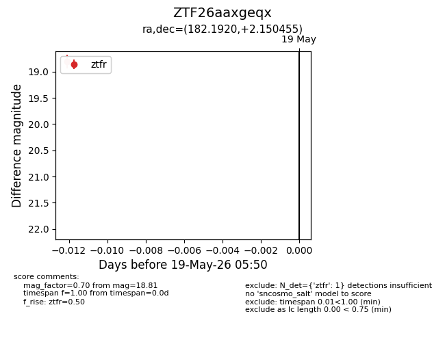
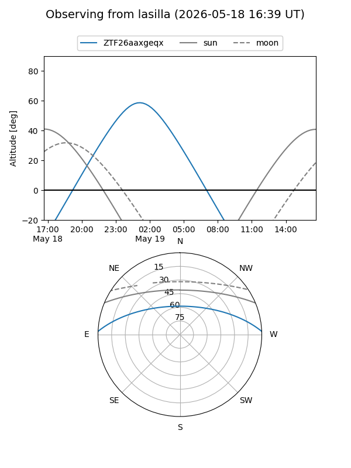
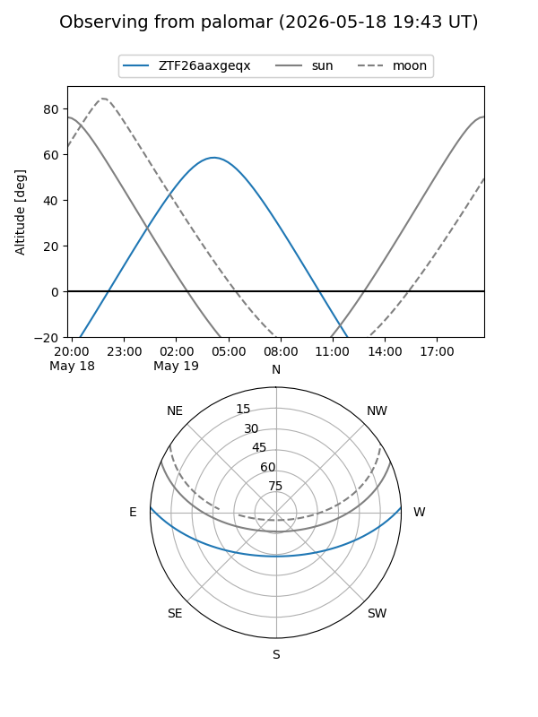
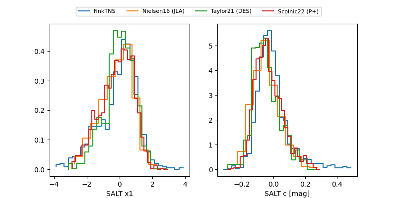

ZTF26aaxgeqx
Target ZTF26aaxgeqx at 2026-05-19 05:52
Aliases and brokers:
FINK: link
Lasair: link
ALeRCE: link
alt names
ZTF26aaxgeqx (ztf,fink_ztf)
Coordinates:
equatorial (ra, dec) = 182.1920,+2.15046
equatorial (HMS+DMS) = 12:08:46.08,+02:09:01.64
galactic (l, b) = (278.8767,+63.01200)
Flags:
Photometry:
last ztfr=18.81
1 ztfr detections
Lightcurve

Visibility


Additional plots
